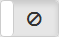
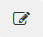

Control panel data screen |


|
Control panel data screen |
|
The screen presents data of the control panel registered in the INTEGRUM system and allows management of the alarm system.
The Menu bar is displayed at the top of the screen, and under the Menu bar - the control panel name in the INTEGRUM system.
- click to arm all partitions that are disarmed. The button is displayed if some partitions are disarmed.
- click to disarm all partitions that are armed. The button is displayed if some partitions are armed.
Which partitions will be armed / disarmed depends on:
- Ethernet module settings (virtual keypad parameters),
- rights of the code used (the service code allows you to operate all partitions, irrespective of the Ethernet module settings).
[region name] - information about the region to which the control panel belongs. Click on the region name to display the regions menu (you can click on another region to assign the control panel to it).
Status indicators - information about the alarm system status is presented by using status indicators in the same way as on the “Control panels” screen (see “Control panels” screen). If any indicator is shown in the  column, a message with additional information is displayed.
column, a message with additional information is displayed.
Active - the following button is displayed:
- click to disable communication with the control panel. The button is displayed when communication with the control panel is enabled.
 - click to enable communication with the control panel. The button is displayed when communication with the control panel is disabled.
Communication with the control panel is established automatically after adding a control panel. For communication with the control panel, INTEGRUM uses the same port as e.g. GUARDX or INTEGRA CONTROL. If communication with the control panel is disabled in INTEGRUM, you can connect to the control panel from GUARDX program or INTEGRA CONTROL application.
Disable communication with the control panel before updating firmware of the alarm control panel or the Ethernet module.
Version - information about the control panel type and firmware version.
Name - alarm control panel name in the INTEGRUM system.
Ethernet module - name of the Ethernet module in the INTEGRUM system. Click on  to display the screen with Ethernet module data (see Ethernet module data screen).
to display the screen with Ethernet module data (see Ethernet module data screen).
Code - a string of digits for user authentication in the alarm control panel. You can enter the service code, administrator code or user code. If the code is to be used for operating the control panel (which depends on the INTEGRUM system settings), remember that the user type and the user rights have effect on availability of some functions.
Identifier - INTEGRA - a string of characters (digits or letters from A to F) for identification of the alarm control panel. This identifier is required during communication with the control panel.
Identifier - DLOADX - a string of characters (digits or letters from A to F) for identification of the DLOADX program.
Identifier - GUARDX - a string of characters (digits or letters from A to F) for identification of the GUARDX program. This identifier is required during communication with the control panel.
For more information about the code and identifiers, refer to the alarm control panel manuals.
 - click to see the code or identifier being entered.
- click to see the code or identifier being entered.
 - click to hide the code or identifier being entered.
- click to hide the code or identifier being entered.
Region - region to which the control panel belongs. Click on  if you want to assign the control panel to another region (the regions menu will appear - click on the region to which the control panel is to be assigned).
if you want to assign the control panel to another region (the regions menu will appear - click on the region to which the control panel is to be assigned).
 - click to save the changes.
- click to save the changes.
The list of control panel users is presented in the tab. You can manage these users (see Managing the alarm control panel users).
Name - the user name. It is preceded by an icon that provides additional information:
- INTEGRUM user. User name in the INTEGRUM system is displayed. Hover the cursor over the icon to see the user number and name in the control panel.
 - the alarm control panel user who is not included in the INTEGRUM database. User name in the in the alarm control panel is displayed. Hover the cursor over the icon to see the user number in the control panel.
- the alarm control panel user who is not included in the INTEGRUM database. User name in the in the alarm control panel is displayed. Hover the cursor over the icon to see the user number in the control panel.
Clicking on the name will display the “Edit” window.
Type - user type in the alarm control panel.
Partitions - numbers of the partitions to which the user has access. Hover the cursor over the partition numbers to see the number of the object to which the user belongs.
Rights - numbers of rights the user has.
Action - the following buttons can be displayed:
- click to add a proximity card to the user (see Adding a proximity card). The button is displayed when the user has no proximity card.
- click to delete a proximity card (see Deleting a proximity card) or replace it with another one (see Replacing a proximity card with another). The button is displayed when the user has a proximity card. Hover the cursor over the button to see the number of the proximity card. If another user has a card with the same number, the button background will appear in red, a hovering the cursor over the button will display the name of that user.
 - click to open the “Edit” window.
- click to remove a user from the alarm control panel (see Deleting a user from alarm control panel (“Control panels” screen)).
Proximity card buttons are available for the control panels with firmware version 1.16 2016-09-09 (or newer).
- click to add a user to the alarm control panel (see Adding a user to the alarm control panel (“Control panels” screen)).
The structure of the alarm system is presented in the tab. The structure items are designated with icons:
- partition,
- zone.
Check box and name are displayed next to the icon.
For partitions, checking the box activates a menu with the following buttons:
- click to arm the partition (or partitions, if you checked several items),
- click to disarm the partition (or partitions, if you checked several items).
For zones, checking the box activates a menu with the following buttons:
- click to unbypass the zone (or zones, if you checked several items),
- click to isolate the zone (or zones, if you checked several items),
- click to inhibit the zone (or zones, if you checked several items).
You can bypass/unbypass the zone if the partition to which the zone belongs is disarmed.
Partition status is indicated by the following icons:
- exit delay countdown is running - remaining time longer than 10 seconds,
- exit delay countdown is running - less than 10 seconds remained,
- armed - mode: “full”,
- armed - mode: “full + bypasses”,
- armed - mode: “without interior”,
- armed - mode: “without interior and without entry delay”,
- temporarily blocked,
- blocked for for guard round,
- entry delay countdown is running,
- fire alarm,
- alarm,
- fire alarm memory,
- alarm memory.
Zone status is indicated by the following icons:
- violated,
- trouble - long violation,
- trouble - no violation,
- inhibited,
- isolated,
- tamper alarm,
- alarm,
- tamper alarm memory,
- alarm memory,
- tamper,
- masking,
- masking memory.
“Configuration supervision” tab
The tab presents information on changes, if any, in the alarm control panel settings.
The tab is displayed if a license for the Alarm Control Panel Configuration Supervision Module has been purchased. The module checks regularly the alarm control panel settings for any changes and sends e-mail notifications about results of the check. Information presented in the tab is secondary in relation to the e-mail messaging.
Date - date of configuration check.
Status - graphic information about configuration check:
- changes have been made to the control panel settings,
- configuration check has failed.
Description - text information about configuration check. If any changes have been made to the control panel settings, they are listed.